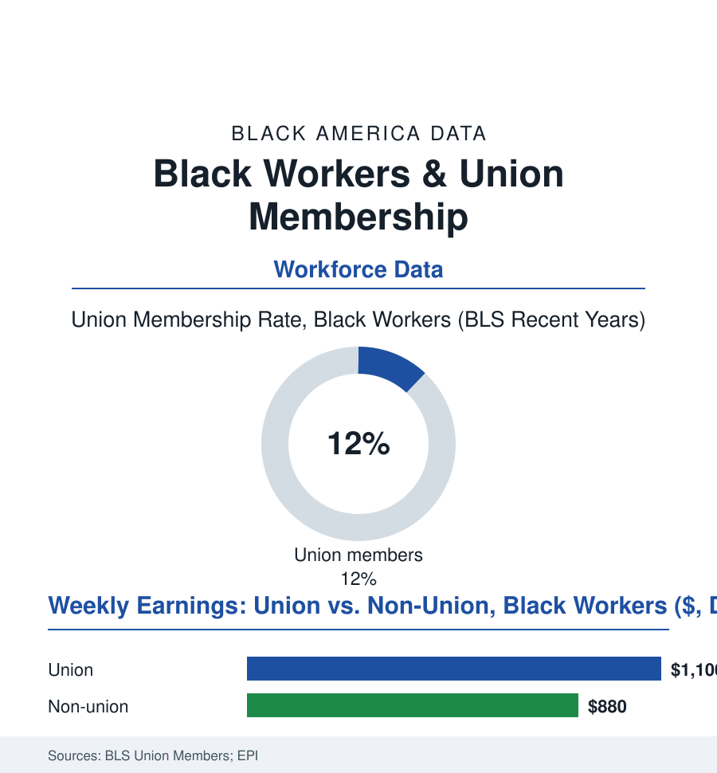

Black Employment
The Union Card: Black Workers and Organized Labor
Black workers carry union cards at the highest rate of any major group in America — a fact with a century of history and a measurable paycheck inside it. The union file.

Here is the employment section's most quietly remarkable standing fact: in the Bureau of Labor Statistics' annual count, Black workers are the most unionized major group in the American workforce — membership rates running a point or two above the national figure year after year, decade after decade. The card is not a relic in this population; it is a living institution with a wage premium attached. This article reads the union file.
From Exclusion to the Vanguard
The history runs in two acts the labor archives document plainly. Act one is exclusion: the craft unions' color bars of the early federation era (the constitutions and the locals' rituals that kept Black craftsmen out of the very trades their hands had built), answered by the community's two strategies in the record — the independent Black unions (the sleeping car porters' Brotherhood of 1925 the towering case, A. Philip Randolph's decade-long fight for recognition making it the era's flagship; the washerwomen's and longshoremen's locals in the Southern record beside it) and the pressure campaigns that pried the federation's doors from outside. Act two is the CIO's industrial turn and the Great Migration's collision with mass production: the packinghouse, auto, and steel unions organizing whole plants — and therewith whole Black workforces — into the middle-class machinery of the contract (seniority, grievance, the pension — the retirement file's foundations poured substantially on union floors), the public sector's unionization after the 1960s completing the structure (the sanitation workers of Memphis in 1968 making the movement's most famous local stand in the record this atlas carries; the postal, hospital, and AFSCME workforces of the public file still the densest Black union ground in America — the direct line, in the membership data, between the civil service's open door and the union card's persistence). The premium the card carries is among the best-measured quantities in labor economics: union Black workers out-earning their non-union counterparts by margins the research centers put in the high teens of percent, with the premium running largest exactly where the wage file needs it most — the pension coverage, the health insurance, and the just-cause protection compounding off-wage in the benefits data.
The Modern Map of the Card
Today's geography follows the public sector's: the membership concentrated in the government, healthcare, transit, and education rows of this section (the teachers' and nurses' locals, the transit unions of the big metros, the municipal federations — New York's District Council 37, the largest municipal local in the country, standing in the record as a substantially Black institution of genuine political weight), the private-sector frontier running through the current organizing waves' most-watched files (the warehouse and coffee-shop campaigns whose young Black organizers headline the labor press, the Southern auto plants' contested votes, the service and gig rows where the classification fights of the app-work file decide whether a card is even possible). The headwinds are the era's standard set in the labor data: density's fifty-year national slide (from a third of the workforce to a tenth — the Black rate sliding with it but from the higher plateau, the state policy maps of right-to-work laws tracking the membership deserts), the public-sector legal challenges of the recent Supreme Court record, the employer campaigns whose literature fills the NLRB dockets. And the polling file closes the loop with the paradox's explanation: Black Americans record the highest union-approval and the highest stated desire for representation of any group in the Gallup series — the card's constituency, in other words, is larger than its count, a reservoir of intended membership the organizing data's recent upticks (petitions at the NLRB running at multi-decade highs) have begun, at the margins, to tap.
Reading the Union Data
The union file is the employment section's keystone because it explains so many of its other tables: the public sector's wage compression, the pension coverage, the middle generation's stability — all written substantially in contracts. The BLS counts the cards each January. What they buy, and what they cost to win, the community that carries them at the highest rate in America has never needed a survey to know. Solidarity, in this file, is not a slogan. It is a line item.
More in Black Employment
The Black Unemployment Rate: The Two-to-One Pattern
Black unemployment runs at roughly twice the White rate — 5.5 percent against 3.3 percent in annual averages — a ratio stable across five decades of federal data. How it is measured and why it persists.
Black Median Weekly Earnings: The 80-Cent Ratio
Black full-time workers earn a median of about $900 a week — roughly 80 cents for every dollar White workers earn. The BLS earnings data by group, gender, and occupation.
Black Labor Force Participation: Working at National Rates
Black labor force participation runs at roughly the national rate — and Black women participate at higher rates than White women. The BLS participation data.
Source: U.S. Bureau of Labor Statistics Union Members annual release; Economic Policy Institute labor research; AFL-CIO and union federation records; National Labor Relations Board data.